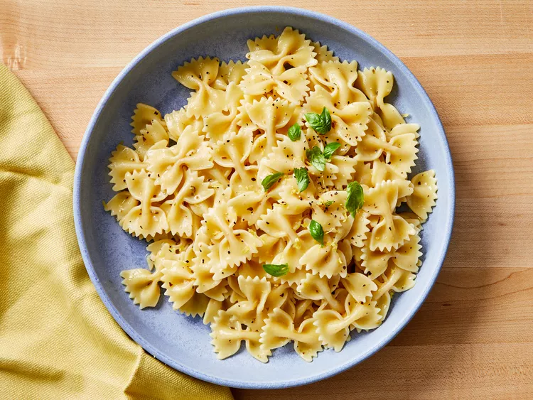

Lemon Butter Herb Pasta

Ingredients
- 4 cups bow-tie pasta (farfalle)
- 1.4 cup butter
- 1/4 cup chicken broth
- 3 tablespoons lenmon juice
- 1/4 teaspoon oregano
- 1/4 teaspoon dried basil
- 1/4 minced garlic
- 1 pinch salt and ground black pepper to taste
Directions
- Gather all ingredients
- Bring a large pot of lightly salted water to a boil.
Cook pasta at a boil, stirring occasionally, until
cooked through yet firm to the bite, about 12 minutes;
drain.
- Melt butter in a saucepan over medium heat. Stir chicken
broth, lemon juice, oregano, basil, and garlic into butter.
Bring to a simmer and reduce heat to medium-low; cook
until thickened to your desired texture, 5 to 7 minutes.
- Season sauce with salt and pepper. Stir cooked pasta into butter
sauce to coat.